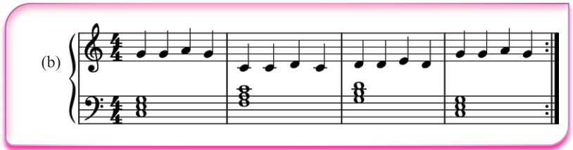
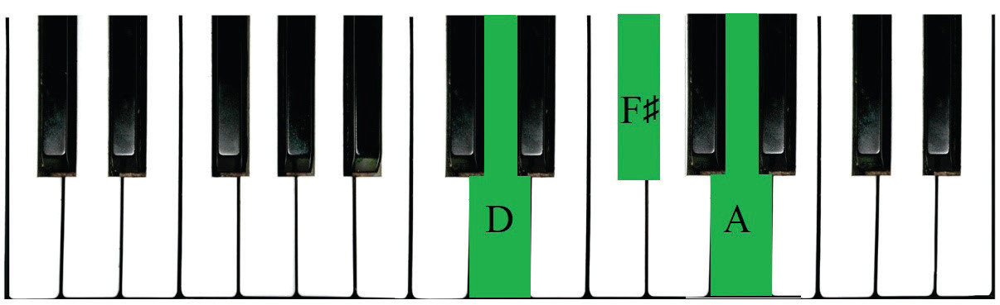
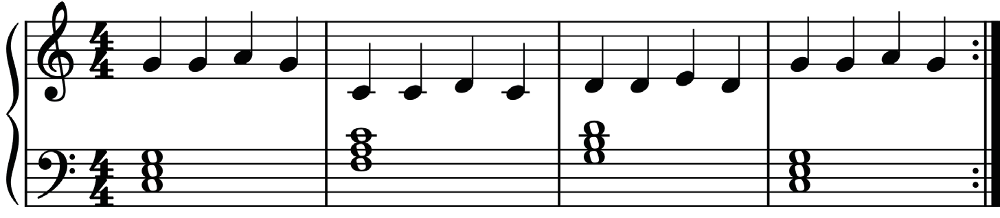

(b)
Playing primary triads in the G major scale
In the G major scale, the primary triads are built on notes G, C and D. These notes form triads G B D, C E G and D F♯ A. Figures 6.14 to 6.16 show primary triads in G major on the piano.



Figure 6.17 show how to play primary triads in the G major scale using the right hand, on the staff.
